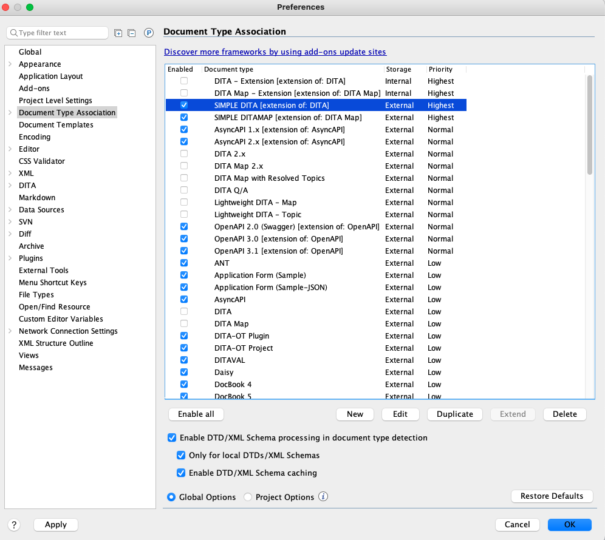

If you have saved the layout and custom framework files to GitHub repository, or shared
location on your network, installing them is very straightforward:
First, clone the repository (or open the network location), where the files have
been saved.
To install custom editor layout in Oxygen, click Window>Load
Layout>Custom, locate and select the .layout file. Then, click Open.
Your editor layout updates automatically.
To install the frameworks, first set the location of the new framework files:
In the Oxygen UI, go to Options>Preferences>Document Type
Association>Locations, and click Add.
In the Choose frameworks directory dialog that appears, navigate to the
custom_ frameworks folder, and click OK.
The path to your custom_ frameworks folder appears in the
Additional frameworks directories list.
Click OK to save.
Next got to Options>Preferences>Document Type Association
where you should the new frameworks installed. Deselect any other frameworks
that reference DITA and click OK. The example below is from my
machine:

The Elements and Attributes windows should reflect the restricted choices created
in the cc_config.xml file. If they don't, close and
reopen Oxygen.
To check for the new templates, click File>New. The Choose a
file template dialog shows the new Topic and Map templates.
How do I undo all this?
Undoing the changes imported above is very simple.
To return to the default Oxygen layout, click Window>Load
Layout>Default.
To return to the default DITA elements, attributes and templates, go to
Options>Preferences>Document Type Association and
deselect the new templates your you imported. Select all the other
frameworks that mention DITA and click OK. You may need to restart
Oxygen to changes. That's it!